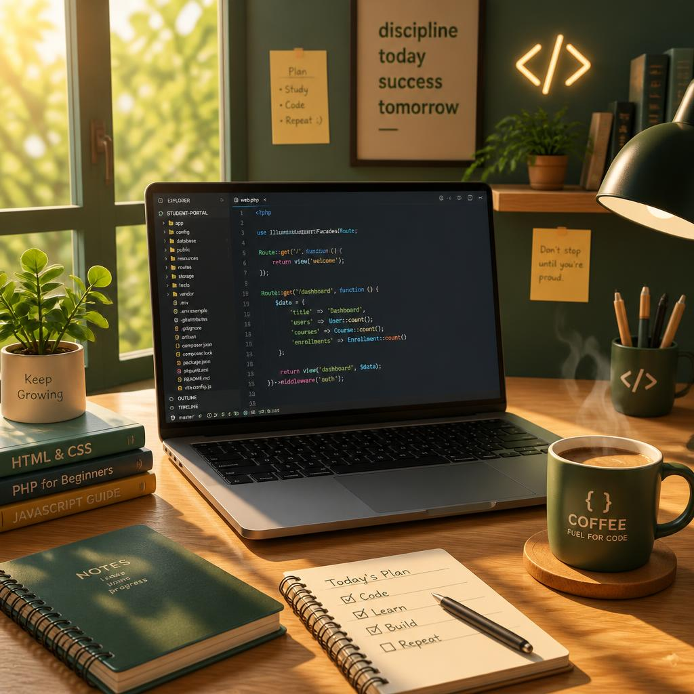

Моє робоче місце
Тут я пишу код, п'ю каву та створюю нові проєкти. Натхнення приходить саме тут!
Біографія
Привіт! Я студентка, активно вивчаю комп'ютерні науки та інженерію програмного забезпечення. Захоплююсь створенням програмної логіки, проєктуванням баз даних та розробкою сучасних додатків.

Інформація про дисципліни
Зараз я зосереджена на вивченні таких напрямків:
- Програмування: C#, .NET, розробка у Windows Forms
- Бази даних: SQL, нормалізація, багатотабличні запити
- Комп'ютерна графіка: апаратне прискорення OpenGL / Vulkan
- Моделювання процесів: eEPC та BPMN 2.0 (Bee-Up)

Розклад занять
Орієнтовний графік на тиждень:
- Понеділок: Комп'ютерна графіка (Лекція), Бази даних (Практика)
- Вівторок: Веб-дизайн (Лабораторна), Програмування (Практика)
- Середа: Проєктування програмного забезпечення (Лекція)
- Четвер: Моделювання бізнес-процесів (Практика)
Досягнення
Серед моїх практичних проєктів:
- Бекенд: розробка REST API на ASP.NET Core з Entity Framework
- Десктоп: C# Windows Forms додатки з покриттям Unit-тестами
- Аналітика: моделювання систем оренди нерухомості у Bee-Up
- Фронтенд: верстка багатосторінкового сайту (HTML/CSS)

Додаткова секція (Мої захоплення)
У вільний час я люблю відпочивати на природі та слухати спокійну акустичну інструментальну фолк-музику, натхненну лісом (гітара, фортепіано, скрипки). Також я захоплююсь створенням складних багаторівневих композицій, векторної графіки та 3D-ефектів у Adobe Photoshop.